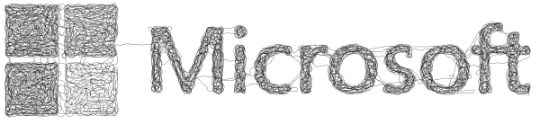

Projects
Learning by doing. Experiment = Ideation + Creation + Validation
Jane & Co.
Many of these projects have a common ingredient. It is the blend of physical and digital assets to create the experience. We use Artificial Intelligence, from now on Jane, to augment us and deliver what would be impossible without her.
Orson Scott Card, Speaker for the Dead
It's the most charming thing about humans. You are all so sure that the lesser animals are bleeding with envy because they didn't have the good fortune to be born Homo sapiens.
Art Microsoft Employee Exhibition
These are my contributions to the MSFT Art Exhibition. Love to see worldwide creations and contribue with my personal view.
Diversity - 2020
"Underneath you can hear music,
to pursue diversity, joy and fulfillment"
Jane&co
 In 1975, 45 years ago Microsoft was founded. This is a testimony to all the people part of the journey: for those who are no longer with us, those who contribute now and those who will come. 45 people representing all Microsoft employees, aligned in columns with diversity as the common language we need to speak, based on their names. Each face is made with one single line, from a photo selected based on personal memories, important milestones and future bets. It is based on an algorithm finding the artistic path from the greyscale colors. It is the starting point for a future CMYK algorithm to create portraits. You can see how a single line connects all of us.
In 1975, 45 years ago Microsoft was founded. This is a testimony to all the people part of the journey: for those who are no longer with us, those who contribute now and those who will come. 45 people representing all Microsoft employees, aligned in columns with diversity as the common language we need to speak, based on their names. Each face is made with one single line, from a photo selected based on personal memories, important milestones and future bets. It is based on an algorithm finding the artistic path from the greyscale colors. It is the starting point for a future CMYK algorithm to create portraits. You can see how a single line connects all of us.

Renaissance - 2019
"In the future learn
these old renaissance buildings
A rainy landscape"
Jane&co
 In 2019 a new Redmond Campus started to emerge. But for new things to come, some will go away. We all are a mix of our past and our present. This work blends the view of our past and future through the eyes of the environment change, as a static (and/or animated view). It is named Renaissance by Jane & co. I implemented an algorithm to create a Shape Moiré for the art work from our Redmond Campus evolution.
In 2019 a new Redmond Campus started to emerge. But for new things to come, some will go away. We all are a mix of our past and our present. This work blends the view of our past and future through the eyes of the environment change, as a static (and/or animated view). It is named Renaissance by Jane & co. I implemented an algorithm to create a Shape Moiré for the art work from our Redmond Campus evolution.
With a transparent paper with vertical black lines with the same width of the vertical columns used, you can move horizontally and see the video showing up. Here is a video with the animation.